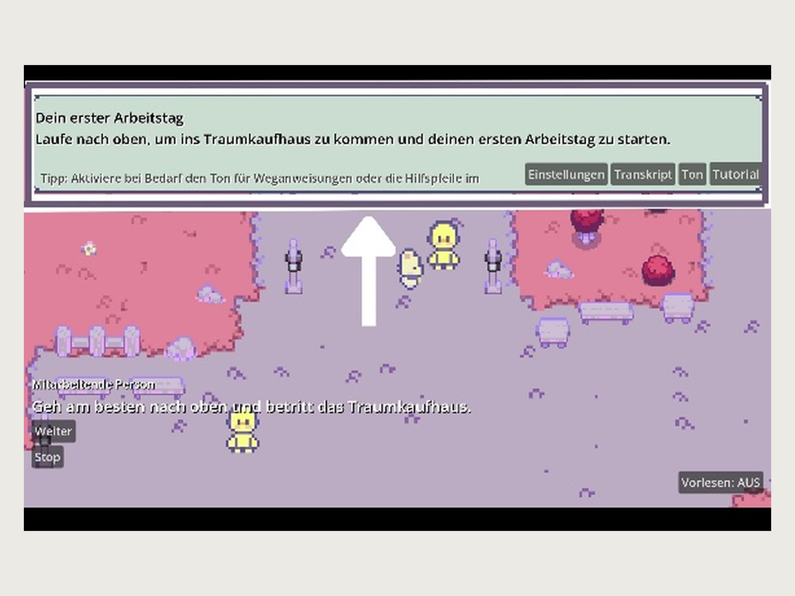
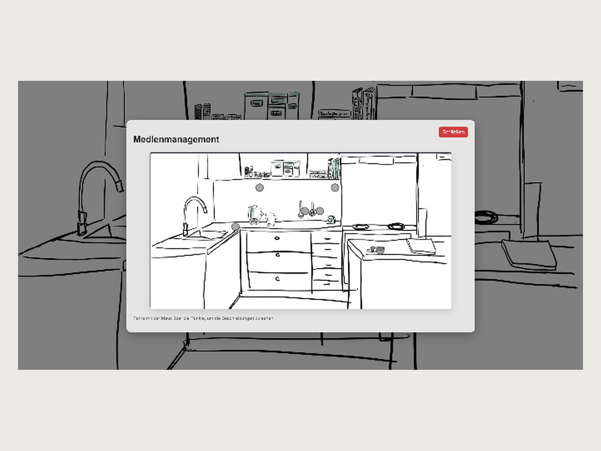
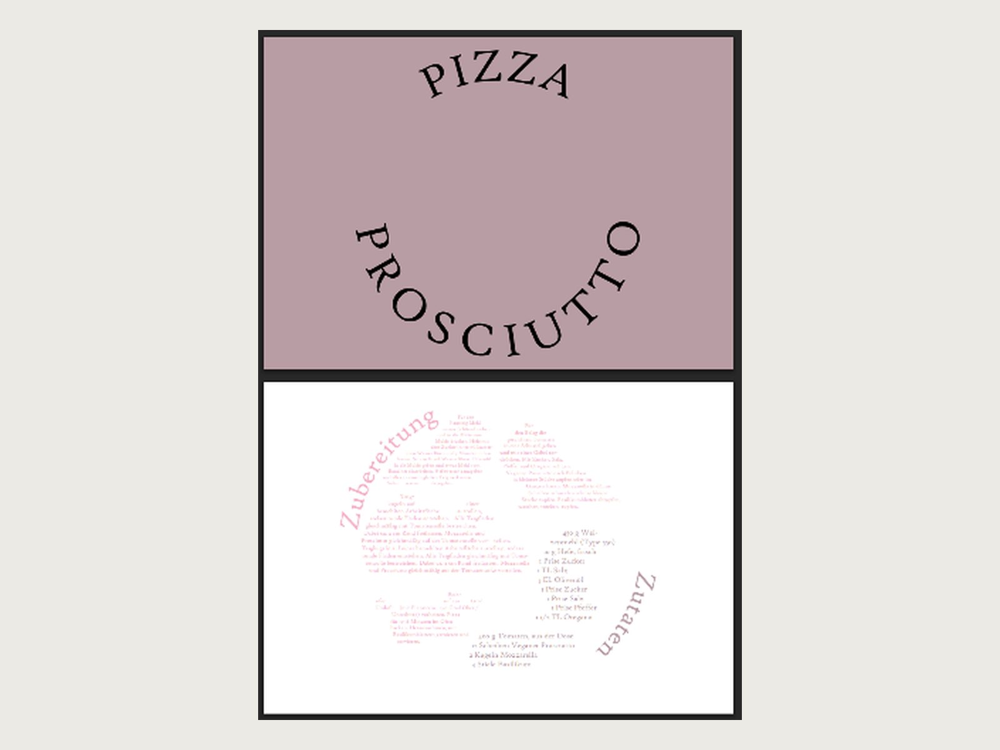

Design
Von der Struktur zum Interface: Informationsarchitektur, Typografie, Designsysteme. In Figma geplant, im Browser überprüft.
- UI-Design
- Designsysteme
- Prototyping
- Figma
Sucht eine Festanstellung, offen für freie Projekte
Webdesign · Frontend · UX/UI
Ich gestalte und baue Websites, Interfaces und Spiele – mit dem Anspruch, dass sie möglichst wenige Menschen ausschließen.



Von der Struktur zum Interface: Informationsarchitektur, Typografie, Designsysteme. In Figma geplant, im Browser überprüft.
Semantisches HTML, modernes CSS, so wenig JavaScript wie möglich. Barrierefreiheit ist bei mir kein Zusatzpaket.
Erst die Frage klären, dann gestalten. Ich arbeite in kleinen Schritten, zeige früh Zwischenstände und begründe Entscheidungen.